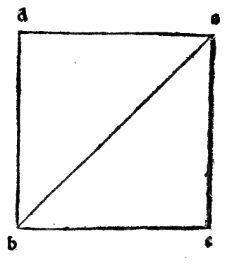
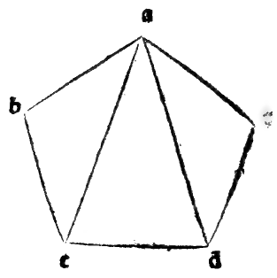

CAPITEL LXVII¶
Wie sich bei den kantigen offen zeigt, dass jede ein Drittel ihrer Säule sei.
In der sechsten des zwölften, erhabener Herzog, schliesst unser Philosoph, dass der riegelförmige Körper, der die erste Art der kantigen Säulen ist, wie oben gesagt worden, in drei gleiche Pyramiden zerlegbar sei, deren Grundflächen jede dreieckig ist, und folglich ist besagter Körper das Dreifache von jeder von ihnen. Und mit dieser Evidenz zeigt sich, dass Jede Pyramide ein Drittel ihres Gylinders oder ihrer Säule sei. Und daraus entsteht die eben gegebene Regel, dass man vom Volumen der ganzen Säule nimmt.
Was bei den gradlinigen Säulen klar erhellt, weil alle diese in so viel riegelförmige Körper auflösbar sind, in wie viel Dreiecke ihre Grundflächen unterschieden werden können, und aus ebensovielen werden jene stets zusammengesetzt genannt, wie in der achten des zwölften bewiesen wird. Also die vierseitige Säule: deren Basis, da sie vierseitig ist, löst sich in zwei Dreiecke auf, indem man darin nämlich von einem gegenüberliegenden Winkel zum andern die Diagonale zieht. Und über diesen zwei Dreiecken denke man sich, und es bilden sich auch wirklich zwei riegelförmige Körper, Und weil ein jeder das Dreifache seiner Pyramide ist, so folgt, dass beide das Dreifache ihrer beiden Pyramiden seien.
Aber beide riegelförmige sind die ganze vierseitige Säule: daher sind die zwei Pyramiden der zwei riegelförmigen 1/3 der besagten Säule. Und diese beiden Pyramiden sind genau ein Ganzes von der ganzen Säule, so wie jene ihre beiden riegelförmigen die ganze Säule sind, indem jene die zwei gleichen und vollen Theile besagter Säule sind, so dass die gegebene Regel aus allen angeführten Gründen nicht trügen kann.
Und auf gleiche Art zeigt sich derselbe Effect bei jeder andern kantigen Säule, wie auch bei ihrer dritten als pentagonisch bezeichneten Art, deren Grundfläche sich in drei Dreiecke auflösen lässt, und deshalb wird die ganze Säule in drei riegelförmige Körper auflösbar genannt, von denen jeder das Dreifache seiner Pyramide ist, und deswegen sind alle drei das Dreifache aller ihrer drei Pyramiden, und diese zusammen wollen eine von der ganzen Säule besagen, sofern ihre drei riegelförmige die ganze Säule wieder ergeben. Und so findet dasselbe statt, wenn man auf alle andern eingeht.
Und die genannte Auflösung der Grundflächen in Dreiecke wird in der zweiunddreissigsten des ersten gezeigt. Woselbst geschlossen wird, dass jede polygonische Figur, d. h. von mehr Winkeln und Seiten stets in so viel Dreiecke auflösbar sei, wie viel ihrer Winkel oder Seiten seien, weniger zwei, z. B. die vierseitige hat vier Winkel und folglich vier Seiten: dieselbe ist auflösbar in wenigstens zwei Dreiecke, d. h. bei der kleinsten ihrer Auflösungen, welche erscheint, wenn man darin eine grade Linie von einer ihrer gegenüberliegenden Ecken nach der andern zieht, wie man hier aus der Figur des Tetragons abcd sieht, welches mittelst der Linie ba, in der Kunstsprache Diagonale und auch Durchmesser genannt, in die beiden Dreiecke abd und bcd zerlegt wird.
Und somit löst sich das Fünfeck wenigstens in drei Dreiecke auf, d. h. nach seiner allgemeinen Regel in zwei Dreiecke weniger, als die Anzahl seiner Winkel oder Seiten beträgt, was sich zeigen wird, wenn von einer (welche es auch sei) seiner beiden Ecken nach den beiden andern gegenüberliegenden zwei grade Linien gezogen werden, wie hier in der verzeichneten fünfseitigen Figur abcde geschehen, welche, nachdem darin von ihrer Ecke a aus nach den beiden gegenüberliegenden c und d die Linien hindurchgezogen, in die drei Dreiecke abc, acd und ade aufgelöst wird. Und jede besagter Linien nennt sich in der Kunstsprache Sehne des Fünfeckswinkels.
Und ebenso lösen sich die Sechsecke in vier Dreiecke u. s. f. auf, so dass wir, erhabener Herzog, den Alten sehr verpflichtet sind, welche mit ihrer Wachsamkeit unsern Verstand aufgeklärt haben, besonders unserm Megaräer Euklid, der zugleich ordnungsmässig von den Früheren sammelte und von den Seinigen in diesen ausgezeichneten Fächern und mathematischen Wissenschaften mit so vielen seiner sorgsamen Beweise hinzufügte, wie in seinem ganzen hervorragenden Werke erhellt, dessen Genie nicht menschlich, sondern göttlich sich zeigt, besonders in seinem zehnten, worin er es in der That so sehr erhoben, wie es dem Menschlichen erlaubt ist, und ich kann nicht fassen, was er tiefer von jenen abstractesten irrationalen Linien hätte sagen können, deren Wissenschaft nach dem Urtheil jedes, der davon mehr versteht, vor allen andern die tiefste ist.
Und von den ganzen Pyramiden, soweit es den Zweck betrifft, sei hier der Schluss.
Marginal Woodcut Diagrams (Paganini 1509)¶

Folio 0057 Diagram 1¶

Folio 0057 Diagram 2¶